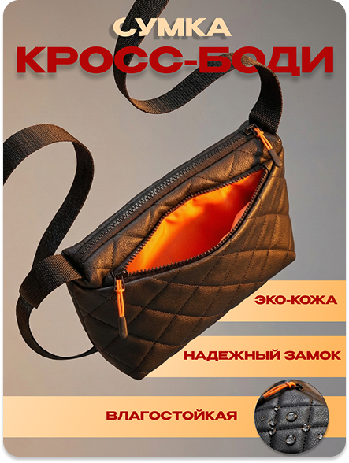
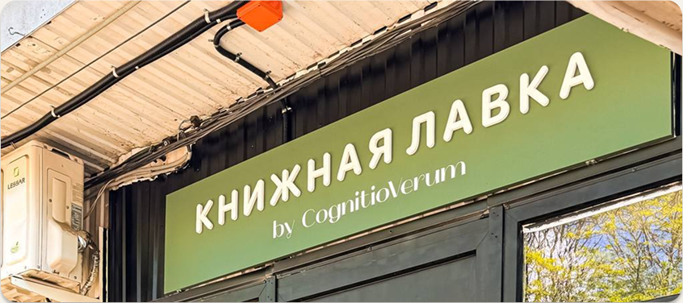
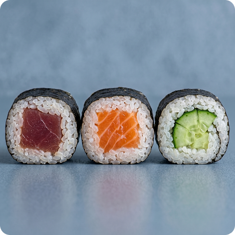

ДИЗАЙН.
СМОТРИТЕ
САМИ.
От карточек товаров и меню до фирменных материалов. Здесь собраны мои работы — их можно открыть крупно и рассмотреть детали.

01 / PRODUCT ↗
02 / IDENTITY ↗
03 / FOOD ↗ ACTUAL PROJECTS / DETAILS INSIDEПОКАЗАТЬ ТОВАР.
ОБЪЯСНИТЬ ДЕТАЛИ.
Карточки для маркетплейсов и товарные визуалы. Крупный объект, понятные характеристики, работа с композицией и акцентами.
Нажмите на любую работу, чтобы открыть изображение в полном размере.
МЕНЮ, КОТОРОЕ
ХОЧЕТСЯ ОТКРЫТЬ.
Макеты для кафе и визуальное оформление блюд. В одном проекте важна структура меню, в другом — аккуратная и аппетитная подача продукта.
Еда и напитки.
Примеры изображений для карточек заведений и цифрового меню. В этих визуалах использованы AI-инструменты и последующая работа с подачей.
ОДНА ИДЕЯ.
НЕСКОЛЬКО НОСИТЕЛЕЙ.
CognitioVerum — моя книжная лавка. Для неё я работал над оформлением: от визуальных элементов и типографики до материалов, которые можно напечатать.
Для меня фирменный стиль — это не только знак. Важно, чтобы вывеска, визитка и другие материалы воспринимались как части одного проекта.
Нужна айдентика? ↗НЕ ТОЛЬКО
КОММЕРЧЕСКИЕ МАКЕТЫ.
Эксперименты с графикой, светом, формой и настроением. Здесь я пробую более свободные визуальные приёмы.
ЕСТЬ ЗАДАЧА?
ДАВАЙТЕ
ПОСМОТРИМ.
Меню, карточка товара, афиша, фирменные материалы или что-то другое. Опишите, что нужно оформить, и пришлите пару примеров — я предложу подход и согласую объём работы.